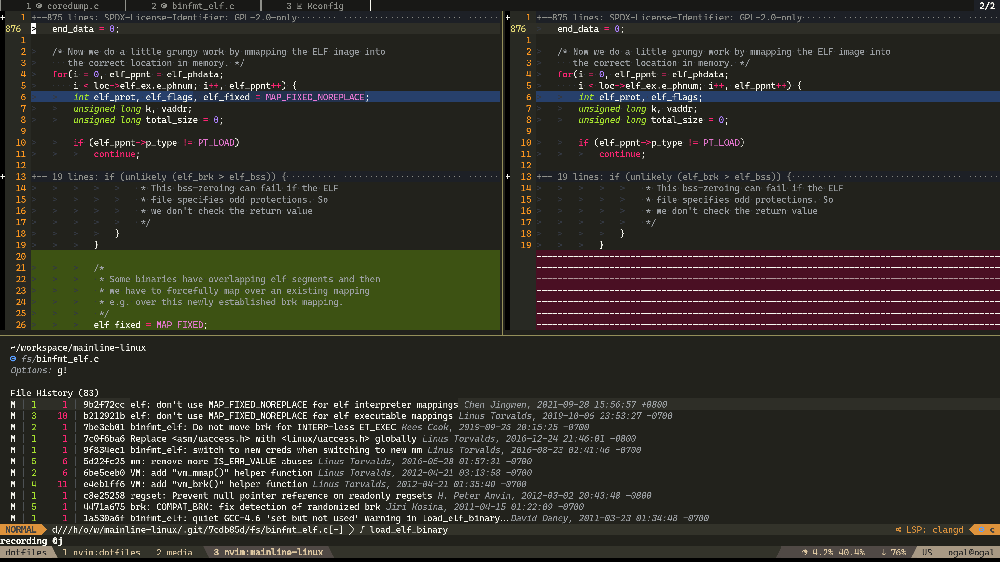
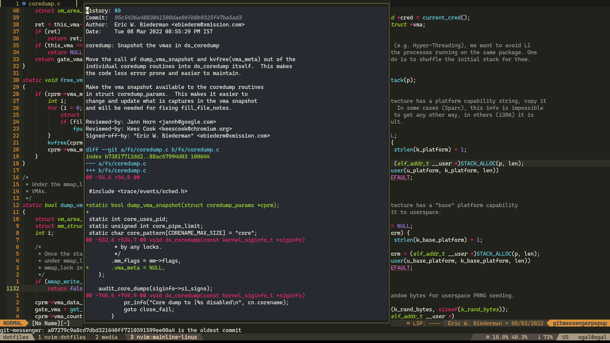

Git
As someone who used the git CLI for everything git has to offer I switched very quickly to use nvim for git management.
I'll cover some of the plugins I use to manage my git through nvim, I recommend to adapt some of them.
Fugitive
Provides the :Git/:G command which basically sends the command to the git CLI and provides an interactive window to work with.
E.g: :G show HEAD/:Git show HEAD
The "main" feature of it is the interactive status window which can be triggered with :G with no params which provide a convenient way to see the diffs, stage files and commit changes.

Gitsigns
Shows the current diff in a column next to the line numbers, lets you to stage/revert/preview/blame hunk's.
Git blame
Shows the current line blame in the status bar or in virtual text.
Git Tree (git log)
To see the git tree I use vim-flog which provides interactive git tree viewer.
You can hit enter on a commit to see the diff, you can perform interactive rebase on the commit when hitting ri and much more.
It so useful that I created ngh which is an alias to replace git hist, it opens a new nvim with a git tree.

Diffview
To see a big diff easily I use diffview.nvim.

I use it to see the history of a file too (<leader>gh in my keymap.lua).

I use it to solve conflicts too.

Hunk History
How many times did you tried git blame to understand why this code exist only to see the last commit just indent the code or made a minor change.
git-messenger.vim is comes to solve this by providing hunk history.
